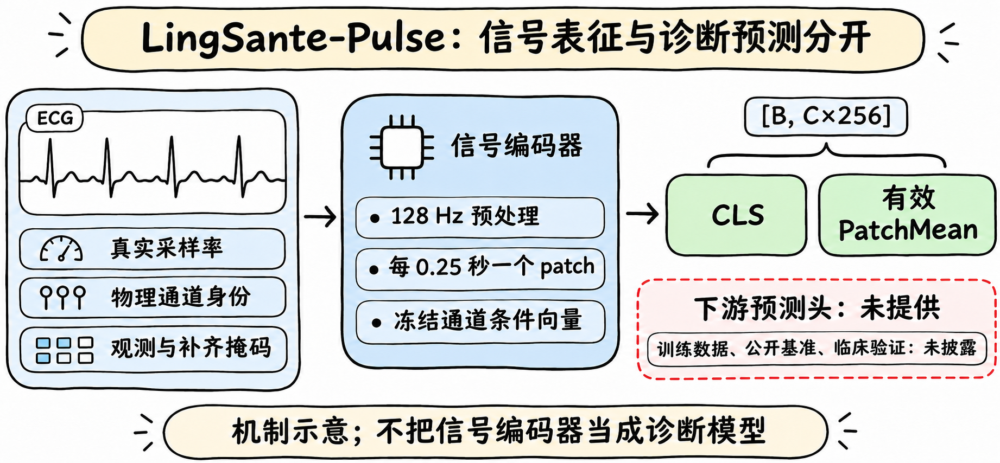

输入、预处理与输出

输入可为[T]、[C,T]、[B,C,T]或对齐的通道字典。调用必须给真实采样率和通道描述；代码包处理固定128Hz预处理、观测样本与存储补齐掩码。不能把原始1280点在任意采样率下都解释为10秒，也不应把padding当真实生理信号。
| 输出 | 形状/含义 |
|---|---|
| CLS | [B,C×256]，各通道拼接 |
| PatchMean | [B,C×256]，仅observed-valid patch聚合，独立于CLS |
| return_tokens=True | 0.25秒间隔的有序patch特征与validity masks |
| 下游预测头 | 未提供，不能直接输出疾病/睡眠分期结论 |
官方随机数组示例为B2、C1、1280点、128Hz、ECG导联II，预期两份[2,256]输出。它是接口演示，随机噪声没有临床含义；没有实际跑过，就不能写“已验证结果”。多通道向量按输入顺序拼接，交换顺序会改变特征位置，需冻结通道顺序。
通道条件与文件契约
channels.json列有EEG、EOG、EMG、ECG导联、PPG、呼吸气流/胸腹用力、SpO2等物理描述。字典出现某类通道只证明身份词汇存在，不等于该类信号的训练覆盖充分或性能已验证。完整字典保存在src，不在正文虚构各模态指标。
通道向量由BAAI/bge-small-en-v1.5固定revision生成，CLS pooling+L2 normalization；仓库只分发结果向量。不能把其256维编码器输出与BGE向量维度直接等同，也不能推断模型会在每次推理实时调用BGE。
| 文件 | 已核实用途 |
|---|---|
| model.safetensors | 约16,708,352参数，HF元数据F32；本轮不下载 |
| config.json | format_version1与三个资产SHA256，未公开网络结构 |
| channels.npz | 固定通道条件向量；本轮不下载二进制 |
| channels.json | 可读物理身份描述 |
| README / LICENSE | 接口与MIT许可 |
revision可固定模型版本，local_files_only可限制本地缓存加载；这些参数不能替代校验独立推理代码包版本。配置内SHA是自动完整性检查的输入，不是对训练质量、适用人群或数据无污染的证明。
当前能判断什么、还缺什么
没有公开样本数、人群/设备分布、数据使用授权、预训练目标、切分与患者隔离、任务头、分类AUROC/F1、回归误差、置信区间、推理速度和内存账本。不以“基础模型”称谓补造Transformer层数或自监督损失，不沿用Ling医学语言模型成绩。
如果后续提供推理包与任务数据，先冻结采样率转换、滤波、单位、缺失段/补齐规则和通道映射，再按患者/设备/机构隔离评测；分别验证CLS、PatchMean、token pooling及不同下游头，并比较跨设备/导联缺失退化。上述为研究验收设计，本轮没有临床测试，也没有证明泛化或安全性。
官方来源与交付
📊 相关可视化: lingsante_pulse_poster_zh.html